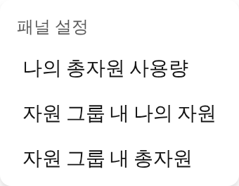
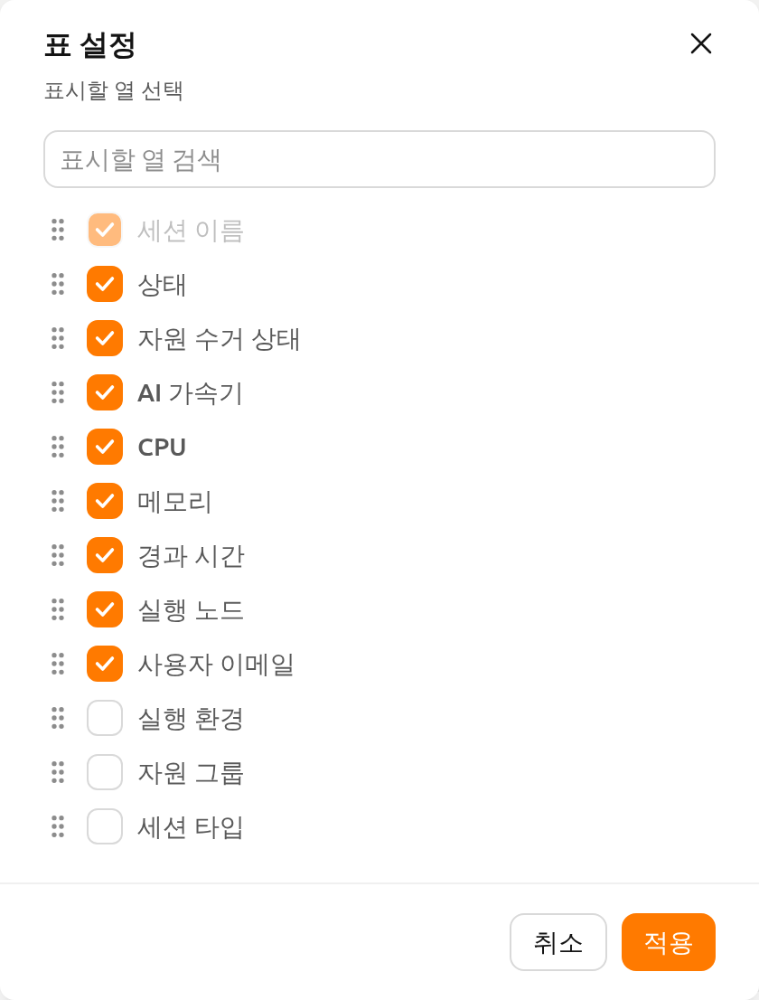

세션 페이지#
Backend.AI에서 세션(session)은 사용자가 할당된 자원을 사용하여 코드를 실행하거나 모델을 학습시키거나 데이터를 분석할 수 있는 격리된 연산 환경을 의미합니다.
각 세션은 런타임 이미지, 자원 크기, 환경 설정 등 사용자가 정의한 구성에 따라 생성됩니다.
세션이 시작되면 대화형 애플리케이션, 터미널, 로그에 접근할 수 있어 작업을 효율적으로 관리하고 모니터링할 수 있습니다.

자원 요약 패널#
세션 페이지 상단에는 CPU, RAM, AI 가속기 등 컴퓨팅 자원을 표시하는 패널이 있습니다. 필요한 정보에 따라 나의 총자원 사용량, 자원 그룹 내 나의 자원, 자원 그룹 내 총자원 등 다양한 패널 뷰를 선택할 수 있습니다. 표시할 패널을 변경하려면 패널 헤더의 설정(톱니바퀴) 아이콘을 클릭한 뒤 패널 설정에서 원하는 뷰를 선택합니다.

나의 총자원 사용량 패널은 모든 프로젝트에서 내가 현재 사용 중인 자원량을 보여줍니다. 각 자원에 적용되는 제한을 확인하려면 숫자 아래의 상태바에 마우스 커서를 올립니다. 여러 제한(도메인, 프로젝트, 키페어 등)이 함께 적용될 경우 가장 엄격한 기준이 적용됩니다.
자원 패널과 관련 지표에 대한 자세한 내용은 대시보드 페이지를 참고하세요.
세션 목록#
세션 페이지에는 내 활성 및 완료된 연산 세션만 표시됩니다.
전체, Interactive, Batch, Inference, 또는 업로드 세션 유형별로 세션을 필터링할 수 있으며,
실행중 탭과 종료됨 탭을 전환하여 세션을 관리할 수 있습니다.
개인 세션 페이지에는 상단 바의 프로젝트 선택기에서 선택한 프로젝트의 세션만 표시되며 주소는 /project/<프로젝트 이름>/session 형태입니다.
이 페이지는 역할에 관계없이 항상 본인의 세션만 표시합니다.
프로젝트 내 모든 사용자의 세션을 조회하고 관리하려면 사이드바 관리자 설정의 세션 페이지를 이용하세요.
기본적으로 세션 이름, 상태, 할당된 자원(AI 가속기, CPU, 메모리), 경과 시간을 확인할 수 있습니다.
테이블 오른쪽 하단의 설정 버튼을 클릭하면 추가 컬럼을 표시하거나 특정 컬럼을 숨겨 뷰를 사용자화할 수 있습니다.
또한 컬럼 설정 대화창에서 컬럼을 드래그하여 테이블에 표시되는 순서를 변경할 수 있습니다.

세션 상세 정보 패널에서 각 세션의 상세 스케줄링 기록을 확인할 수 있습니다. 이를 통해 스케줄링 결정, 지연, 실패 등을 파악할 수 있습니다. 자세한 내용은 세션 스케줄링 기록을 참고하세요.
세션 런처의 시작 버튼은 기본적으로 한 개의 세션을 생성합니다. 동일한 설정으로 여러 세션을 한 번에 시작하려면 시작 버튼의 드롭다운 메뉴를 열고 복수 세션 동시 시작 을 선택합니다. 자세한 내용은 검토 및 시작 섹션을 참고하세요.
세션 목록 도구 모음의 다운로드 버튼을 사용하여 세션 목록을 CSV 파일로 내보낼 수 있습니다. 내보내기는 관리자뿐 아니라 모든 사용자가 사용할 수 있으며, 각 사용자는 자신의 세션 기록을 내보낼 수 있습니다. 개인 세션 페이지에서 내보내는 CSV에는 항상 본인의 세션만 포함됩니다.